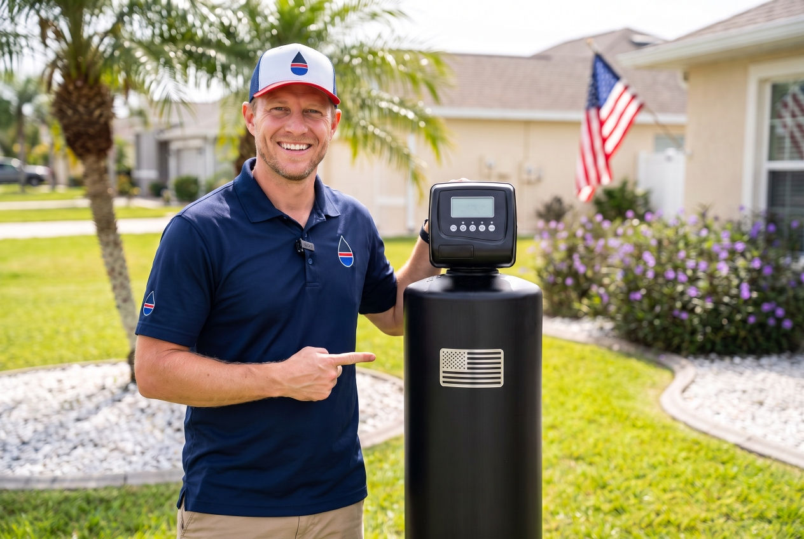
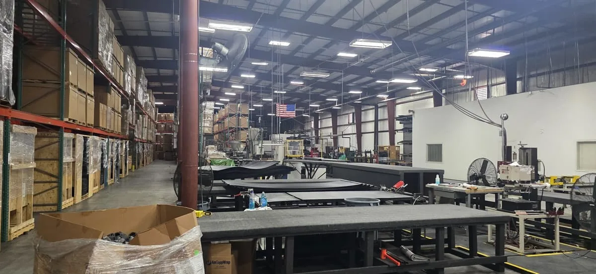
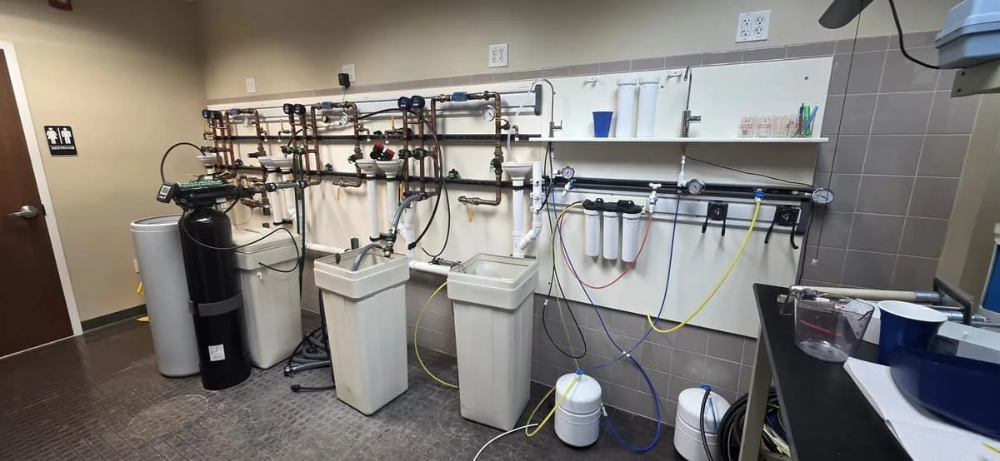

Aquonyx filtration, softening and reverse osmosis systems, professionally installed by licensed contractors in Phoenix, South Florida and Orlando, with a lifetime warranty on whole-home systems.
Systems by AQUONYX
Licensed & insured Lifetime warranty on whole-home systems Built in the USA

We recommend a system only after testing your water, so you get what your home actually needs rather than the biggest thing on the truck.

A deep bed of activated carbon that reduces chlorine, chloramine, taste, odor and many organic contaminants at every tap in the house. Choice of coconut shell or catalytic carbon, in 1.0, 1.5 and 2.0 cubic foot sizes. No salt, no added chemicals.

A metered softener that removes the calcium and magnesium behind hard-water scale, protecting your water heater, fixtures and appliances. Available in 30,000, 45,000 and 60,000 grain capacities, with a separate brine tank.

A five-stage reverse osmosis system at your kitchen sink, from a 5 micron sediment pre-filter through the membrane to a remineralization stage that puts calcium and magnesium back. Quiet, non-electric, with a 3-gallon storage tank.
Open the tank up and see what each part does, from the carbon at the top down to the distributor at the bottom.
Drag to turn it
Step 1 of 6
One tank, one job
The Black Diamond is a single tank in a black jacket with a metered control valve on top. It plumbs into the main line where water enters the house, so every tap downstream gets filtered water. Built in the USA and backed by a lifetime warranty.
Step 2 of 6
A deep bed of media
Cut the tank open and it is mostly media. A deep bed of activated carbon fills the upper two thirds, resting on a gravel underbedding that keeps the bed level and stops media washing out.
Step 3 of 6
Coconut shell or catalytic
The carbon is the part doing the work. Coconut shell carbon handles chlorine, taste and odor. Catalytic carbon is the choice when your utility uses chloramine, which ordinary carbon struggles with. Available in 1.0, 1.5 and 2.0 cubic foot beds.
Step 4 of 6
Keeps the bed where it belongs
Under the carbon sits a layer of graded gravel. It spreads the flow evenly across the bottom of the bed so water cannot channel down one side, and it stops fine media reaching the distributor.
Step 5 of 6
How the water travels
Water enters at the top, works down through the carbon, and is collected by the distributor basket at the bottom of the riser tube. It then travels back up the riser and out to the house.
Step 6 of 6
Backwashes only when needed
The metered valve on top counts the water you actually use. It backwashes the bed on a schedule driven by that number rather than a timer, which lifts packed media, flushes out what the carbon has caught, and resets the bed.
Book a free in-home water test and our specialists will walk you through your results and options for your water, home size, and budget, with no pressure and no obligation.
Built on decades of US water-treatment manufacturing, so parts are still available years later and the valve platform is one any trained technician can service.
Every system comes off a domestic production floor where valves are staged, tanks are filled with media, and finished units are tested on live, plumbed water lines.
Qualifying systems across the Aquonyx catalog, including softeners and carbon filtration, carry a lifetime limited manufacturer warranty.

